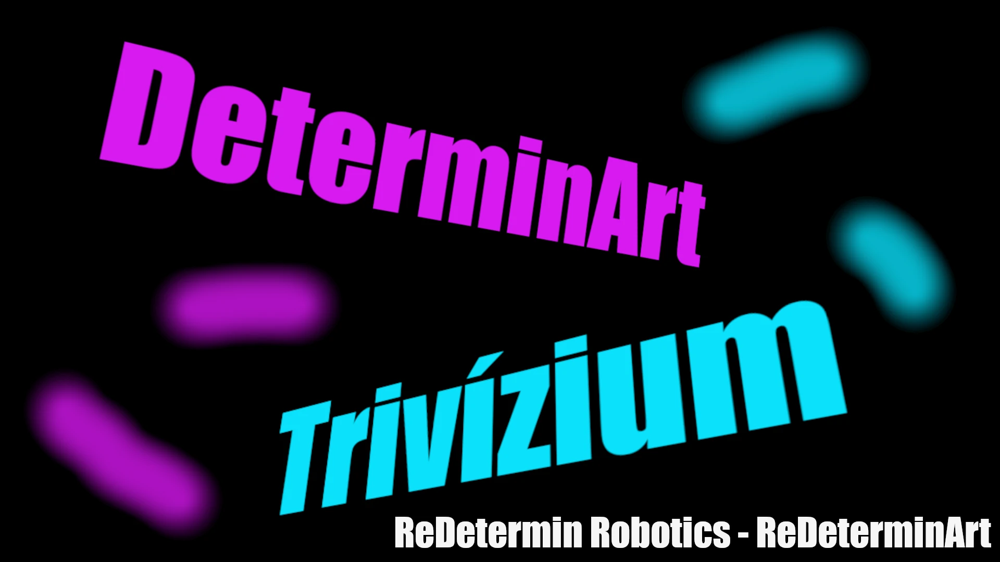
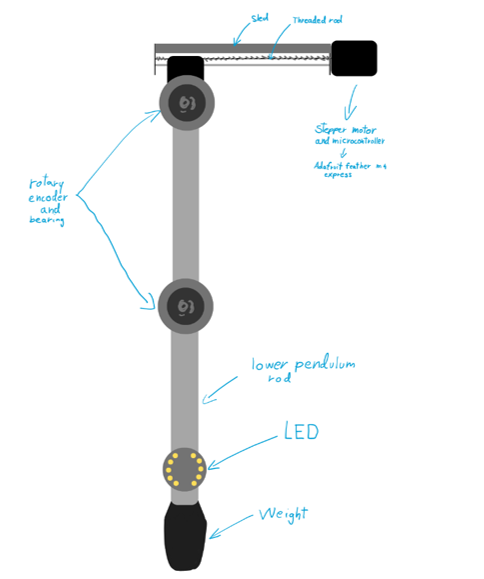
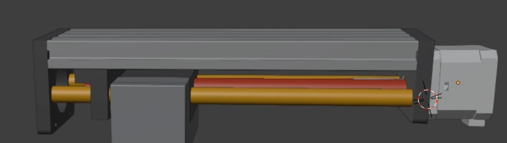
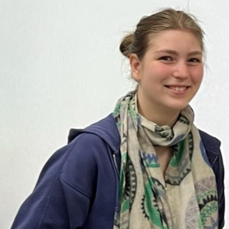

DeterminArt
Where Chaos Becomes Art
Transforming language into motion and motion into light through AI, robotics, and chaotic dynamics.
Create Motion
Transforming language into motion and motion into light through AI, robotics, and chaotic dynamics.
Create MotionDeterminArt is a unique interdisciplinary project that brings together robotics, physics, artificial intelligence, and visual art. Developed by the student team Trivízium, the system transforms abstract human ideas—such as emotions or words—into physical motion and light-based artworks. At its core, DeterminArt demonstrates that science and creativity are not separate domains but deeply interconnected ways of exploring and expressing the world. The project uses a mechanical double pendulum, whose chaotic motion generates complex and unpredictable patterns. These patterns are captured through light emitted by LEDs attached to the pendulum, creating striking visual compositions. By combining real-world physics with intelligent systems, DeterminArt turns invisible concepts into tangible artistic experiences.
The foundation of DeterminArt lies in chaotic motion, specifically a system known as the double pendulum. Despite its simple mechanical structure, the double pendulum exhibits highly complex behaviour due to its sensitivity to initial conditions. This means that even the smallest difference in how the system is started can result in dramatically different motion patterns. Although this motion may appear random, it is entirely deterministic—it follows precise physical laws. This phenomenon, often described as “sensitive dependence on initial conditions,” is a key concept in chaos theory. DeterminArt makes this abstract idea visible through light painting, allowing viewers to observe how tiny variations can produce entirely new and unpredictable visual outcomes.

The hardware system consists of a double pendulum with LEDs attached to its arms. The pendulum is actuated by motors that can be controlled to set specific initial conditions. As the pendulum swings, the LEDs trace out intricate light patterns that are captured using long-exposure photography. This setup allows for the visualization of chaotic motion in a way that is both scientifically informative and artistically compelling.The hardware of DeterminArt is built around a precisely engineered double pendulum system. It consists of two rigid rods connected by joints with bearings, enabling smooth rotational movement. Each joint is equipped with encoders that measure angular position, velocity, and direction, providing real-time data about the system’s behaviour. A linear actuator driven by a high-torque stepper motor moves the pendulum’s suspension point, allowing controlled excitation of the system. This enables the creation of diverse motion patterns. At the end of the pendulum, an LED module controlled by a microcontroller produces light that responds dynamically to movement. Additional components such as slip rings ensure continuous electrical connections during rotation, making the system both robust and reliable.

DeterminArt’s software architecture connects human input to physical motion through a multi-layered pipeline. Users interact with the system via a website, where they enter a word or short text. This input is processed and converted into structured parameters, which are transmitted through a cloud-based backend. The embedded control system, running on microcontrollers, receives this data and applies it to the physical system. One controller manages motion and reads sensor data from encoders, while another handles LED output. Together, they create a seamless integration between digital input and real-world behaviour, ensuring that every interaction results in a unique physical and visual outcome.
Artificial intelligence plays a crucial role as a translation layer between human language and physical motion. When a user submits text, the AI analyses its emotional and conceptual characteristics—such as calmness, intensity, or mood—and converts these into numerical parameters. These parameters determine how the pendulum moves and how the LEDs behave. Rather than generating art directly, the AI sets the initial conditions that shape the system’s chaotic motion. In this way, DeterminArt uses AI not as a creator, but as a tool that helps transform meaning into motion and motion into art.
Nóri
Dani

Janka
DeterminArt was created by Trivízium, a team of 10th-grade students from the Alternatív Közgazdasági Gimnázium (AKG). The team brings together diverse interests, including programming, electronics, and design, allowing each member to contribute unique skills to the project. Throughout development, responsibilities were shared dynamically, enabling all team members to gain experience across multiple disciplines. From hardware construction and software development to design and documentation, the project was a collaborative effort that strengthened both technical abilities and teamwork.
The DeterminArt project continues to evolve, with several planned improvements. One key goal is the introduction of adjustable-length pendulum arms, which would expand the range of possible motion patterns and deepen the exploration of chaotic dynamics. Additional developments include integrating an automated camera system to capture light paintings and expanding the project’s online presence with a gallery of generated artworks. The team also aims to present DeterminArt at exhibitions, science events, and educational institutions, bringing the experience to a broader audience.
DeterminArt has strong potential as an educational tool, particularly in demonstrating complex scientific concepts. By visualizing chaotic motion through light patterns, it makes abstract ideas such as determinism and sensitivity to initial conditions easier to understand. The project also supports interdisciplinary learning, combining physics, robotics, programming, and art into a single experience. Students can interact with the system, observe real-time results, and even use it as a platform for programming and data analysis exercises. This hands-on approach encourages curiosity, creativity, and deeper engagement across multiple fields of study.